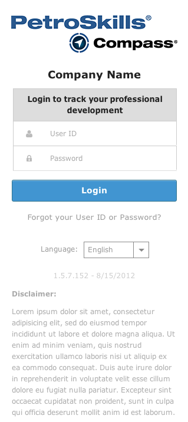

Login
As shown below, this is the login screen for both Desktop and Tablet devices. A good use of the login screen is when a user needs to provide credentials before getting access to a restricted page or a portal.
The login screen requires the user to provide a User ID and a password. When the user doesn't remember either of the above, they can go to the "Forgot your User ID or Password?" link and be given further instructions on how to recover their credentials.
The login system should consists of three pages:
- Login page: usually known as the landing page or the portal page before accessing the web application.
- Recovery page: where the user recovers their credentials.
- Confirmation page: a success page with further instructions for the user to recover their credentials.
Desktop & Tablet
Login Page
Recovery Page

Confirmation Page
Multi-language Selection
Under the "Forgot Your User ID or Password?" link, users can choose the language that suits their preference. The language choices are displayed in a select dropdown as shown below:
Error States
Login Page with Form Errors
As shown below, this displays the error state of the login page. The input boxes are highlighted with a faded red background color. Then below the form, a highlighted box displays the error message to correct the invalid form. The error message is displayed in bullet points.
Recovery Page with Form Errors
As shown below, this displays the error state of the recovery page. The input boxes are highlighted with a red border and a faded red background color. Then below the form field, a red box displays the error message to correct the invalid form field.
Smartphone
With the responsive framework, the login screen should look similar to what's being viewed on the Desktop and Tablet. It is also made to fit on a smartphone with no zoom or scaling.
